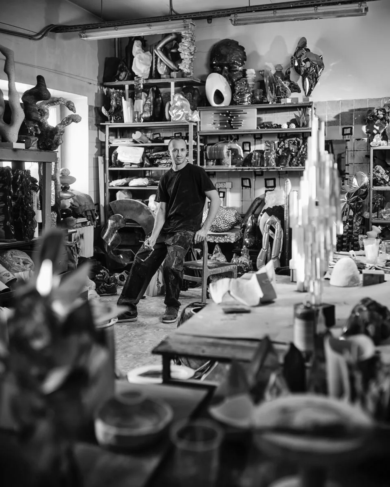
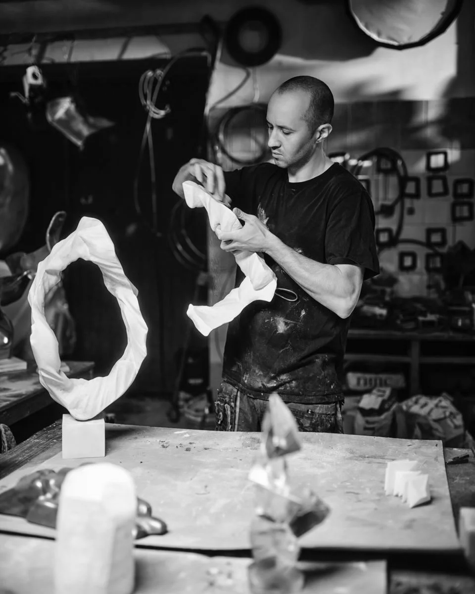
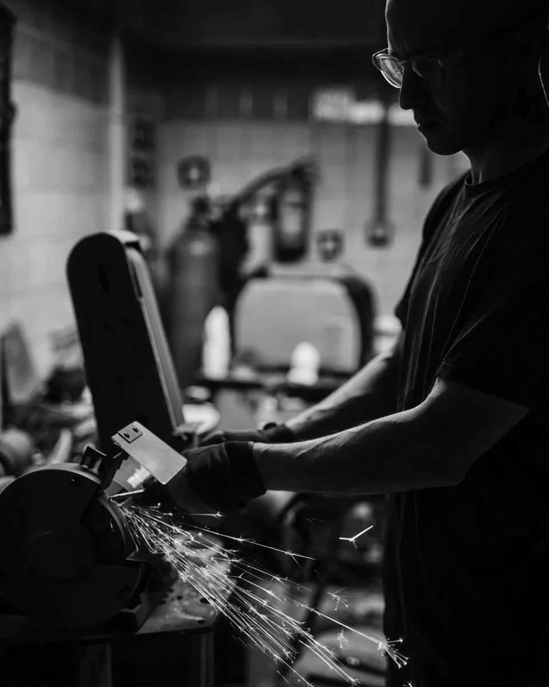
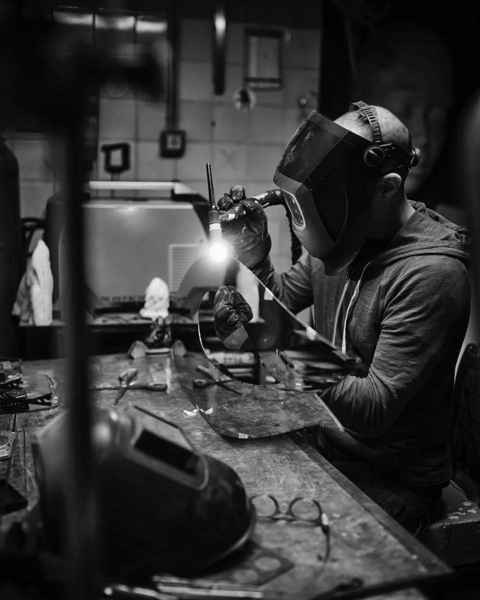

Leo Efimoff is a sculptor, artist, and photographer. He makes sculpture and decorative objects for interiors. Each piece is made by hand using distinctive techniques and materials, and is either one of a kind or produced in a small edition.
Born in Pskov in 1980, Leo Efimoff started out as a photographer and video director before turning to sculpture, especially the abstract forms he believes fire the imagination. He draws on a wide range of sources, from the natural world to contemporary digital art, and does not limit himself to any particular material or shape.
In a workshop he describes as a mini-factory, he makes one-of-a-kind sculptures, each with its own character, without a set story or title attached. He treats every piece as a discovery, guided by the idea that art should emerge on its own, without contrived meaning. Nothing is planned down to the last detail; the surprise is part of the point.
Collectors and designers seek out his work. His sculptures do more than make a space look better; they give the rooms they live in real philosophical depth.


